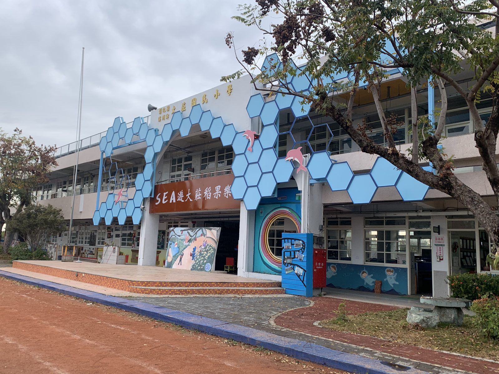

SENSE 01
💛
Move with Passion
感動親師生熱情
A school is its people. We start with the question: how do we keep teachers, students, and parents excited to walk in the gate each morning?
Welcome to Dajuang Elementary School, a small rural school of about 70 students on the north bank of the Zhuoshui River. Founded in 1955, our school has grown alongside the farming community of Dazhuang Village — a place where rice paddies, dragon fruit fields, and guava orchards shape both the landscape and the curriculum.
大莊國小是一所位於彰化縣溪州鄉、濁水溪北岸的偏鄉小學，全校約 70 名學生。1955 年創校至今 70 年，與大庄村的農作社區一起成長——稻田、火龍果園、芭樂果園，既是這裡的風景，也是學校課程的基底。
We are best known across Taiwan for our place-based disaster prevention curriculum: "SEA Explore Rice-Fruit-Joy" — a four-year MOE-recognized program that turns the school's location (river hazards, an artillery-site relic, an earthquake fault) into hands-on safety lessons. Our Eco-Drumming Band, founded in 2003, makes music from buckets, trash cans, and recycled bins — and tours from Changhua to Taipei.
我們最為人所知的是「SEA 遊稻果樂」特色防災課程——把學校所在地的水患、砲陣遺址、彰化斷層全部轉化為孩子的安全教育，連續 4 年獲教育部肯定。2003 年成立的環保打擊樂團，用鐵桶、廚餘桶、塑膠桶演奏出最具創意的音樂。

Principal Lyu Yan-yi's leadership rests on four verbs — four "senses" that shape every Dajuang lesson, every event, and every conversation with parents.
呂彥億校長的辦學願景濃縮為四個動詞、四種「感」——感動、推動、跟進、激勵，貫穿在大莊國小的每一堂課、每一場活動、每一次與家長的對話。